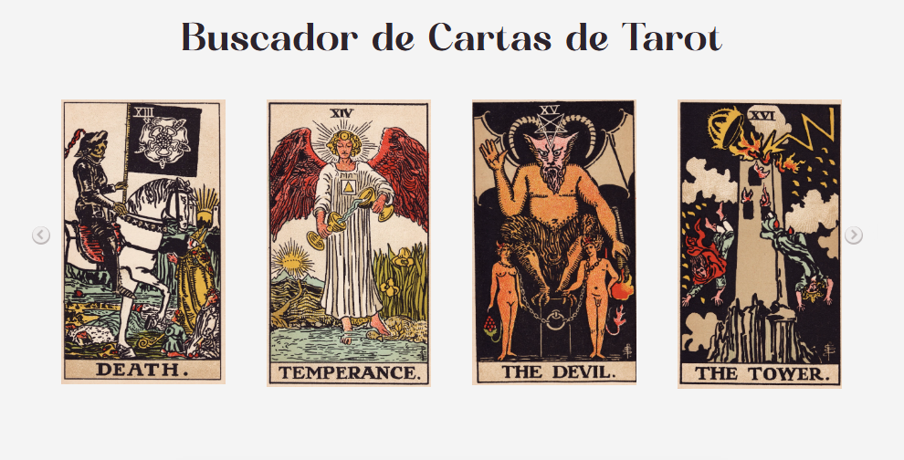
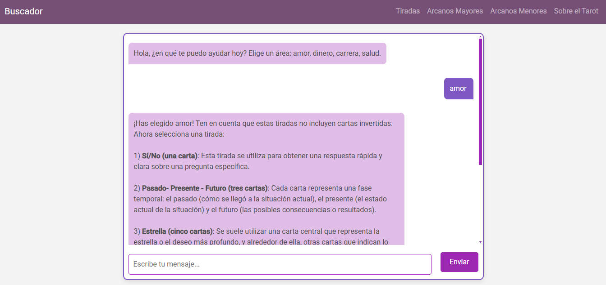
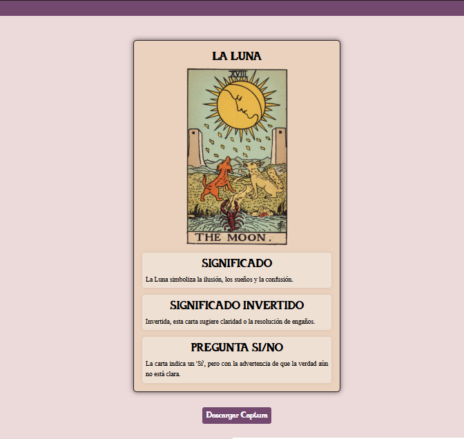
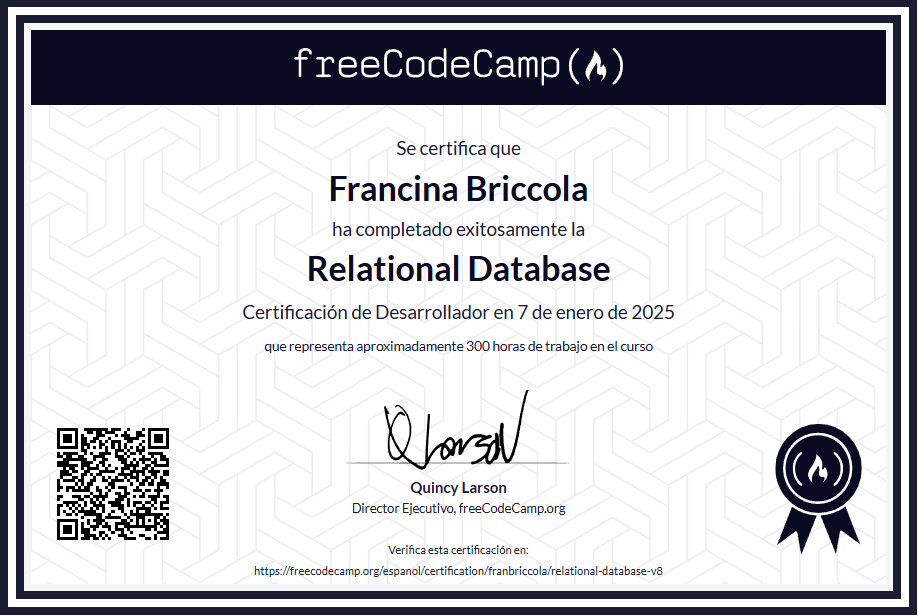

Proyectos
1) Buscador de Cartas de Tarot
Este proyecto inicialmente consistía en un simple buscador de cartas del tarot, en el cual al ingresar su nombre se generaba dinámicamente una página con una descripción breve del significado de la carta. Luego incorporé un chat-bot que realiza tiradas ofreciéndole al usuario diferentes áreas a consultar y tipos de tiradas predeterminados. Para este proyecto utilicé HTML, CSS, Javascript (con librerías como JQuery) y Node.js.



Enlace al repositorio de GitHub
2) Relational Databases
Estos proyectos pertenecen a un curso que realicé en el cual trabajé con el lenguaje SQL, Bash y PostgreSQL
Enlace al repositorio de GitHub
Certificaciones
Certificaciones de FreeCodeCamp

×